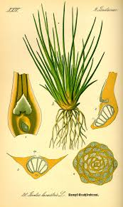

Isoetaceae
Quillwort Family
Isoetaceae, the quillwort family, is a unique and ancient family of lycophytes (Phylum Lycopodiophyta), comprising the single extant genus Isoetes with around 190-250 species. These are typically perennial, aquatic or semi-aquatic (growing in seasonally wet habitats) herbs characterized by a distinctive growth form: a basal tuft of quill-like leaves arising from a short, fleshy, corm-like stem base. Key features include the presence of a ligule on each leaf, heterospory (producing two spore sizes), and sporangia uniquely embedded within cavities at the swollen leaf bases.
Overview
Quillworts (Isoetes) represent the only surviving lineage of the Isoetales, an order that includes the giant rhizomorphic tree lycopsids (like Lepidodendron and Sigillaria) which dominated Carboniferous swamp forests. Despite their inconspicuous, often grass-like appearance, modern quillworts retain key features linking them to these ancient relatives, such as heterospory, ligules, and a unique type of basal growth from a corm-like structure. They have a cosmopolitan distribution, found in lakes, ponds, streams, rivers, and ephemeral pools from tropical to arctic regions.
Their habitat ranges from permanently submerged aquatic environments to terrestrial settings that are only seasonally wet (like vernal pools or rock outcrops). Their quill-like leaves often contain internal air chambers (aerenchyma) facilitating gas exchange underwater. Economically, Isoetaceae has limited direct importance, though some species are occasionally used in aquariums. Ecologically, they can be important components of aquatic and wetland vegetation. Scientifically, their phylogenetic position and unique morphology make them crucial for understanding lycophyte evolution and the origins of features like heterospory and tree-like growth forms in ancient plant lineages.
Quick Facts
- Scientific Name: Isoetaceae Dumort.
- Common Name: Quillwort family
- Number of Genera: 1 (Isoetes)
- Number of Species: Approximately 190-250
- Distribution: Cosmopolitan, in aquatic or seasonally wet terrestrial habitats.
- Evolutionary Group: Vascular Plants - Lycophytes (Phylum Lycopodiophyta, Class Lycopodiopsida)
- Order: Isoetales
Key Characteristics (Lycophyte Features)
Sporophyte (Dominant Plant)
- Habit: Perennial herbs, typically aquatic, amphibious, or seasonally terrestrial. Plants consist of a basal tuft of leaves arising from a short, fleshy, erect, often lobed stem base resembling a corm.
- Stem (Corm): Short, fleshy, subterranean, typically 2- to 4-lobed in cross-section. Exhibits limited secondary growth from a unique cambium.
- Leaves (Microphylls): Simple, linear, quill-like (often cylindrical or slightly flattened), arranged spirally in a dense basal tuft. Possess a single unbranched vein and typically 4 longitudinal air canals divided by transverse septa. A small, inconspicuous appendage called a ligule is present on the adaxial (upper) surface of each leaf, just above the sporangium. Leaves widen at the base to enclose the sporangium.
- Roots: Dichotomously branched, arising from the grooves between the lobes of the corm-like stem.
Reproductive Structures (Sporophyte)
- Sporophylls: All leaves are potentially spore-bearing (sporophylls), though outer leaves may be sterile.
- Sporangia: Uniquely located individually within specialized cavities (fovea) on the adaxial (inner) side of the swollen leaf base. Sporangia are relatively large, ovoid or globose, and indehiscent.
- Velum: The sporangial cavity is often partially or wholly covered by a thin flap of tissue called the velum, originating from the leaf tissue above the sporangium. The extent of velum coverage is an important species identification character.
- Heterospory: Produce two distinct types of spores:
- Megasporangia: Contain relatively few (dozens to hundreds) large megaspores (typically 250-800 µm diameter). Megaspores are trilete (tetrahedral scar) and often have species-specific surface ornamentation (smooth, tuberculate, ridged, spiny, reticulate).
- Microsporangia: Contain thousands of tiny microspores (typically 20-40 µm diameter). Microspores are typically monolete (bean-shaped with a single scar line) and often echinate (spiny).
Gametophyte Generation (Reduced Stage)
Gametophytes are highly reduced and develop endosporically (entirely within the respective spore walls).
- Megagametophyte: Develops within the megaspore wall, eventually producing archegonia near the ruptured trilete scar.
- Microgametophyte: Develops within the microspore wall, consisting essentially of an antheridium that releases numerous multiflagellate sperm.
- Fertilization: Occurs when sperm swim through water to reach the archegonia on the megagametophyte. The resulting zygote develops into the sporophyte embryo.
Field Identification
Identifying Isoetes relies on recognizing its unique growth form, habitat, and features of the leaf bases.
Primary Identification Features
- Habit: Tufted, grass-like or quill-like herb growing from a basal corm structure.
- Habitat: Aquatic (submerged in lakes, ponds) or amphibious/terrestrial in seasonally wet areas (vernal pools, seeps, wet rock crevices).
- Leaves: Simple, linear, undivided, quill-like, often with internal air chambers, arising in a basal tuft.
- Swollen Leaf Bases: The bases of the leaves are distinctly swollen.
- Sporangia in Leaf Base: Large sporangia embedded within the swollen adaxial base of the leaf (may require careful dissection or observation of detached leaves).
- Ligule: Small flap of tissue located just above the sporangium at the leaf base (requires magnification and careful observation).
- Heterospory: Presence of both large megaspores and tiny microspores within sporangia (often requires dissecting different leaf bases and magnification).
Secondary Identification Features (Often need magnification/microscopy)
- Corm Lobes: Number of lobes on the corm-like stem base (2-4).
- Leaf Tip/Margin: Shape of leaf apex, texture.
- Velum Coverage: Extent to which the velum covers the sporangium.
- Megaspore Ornamentation: Surface pattern (smooth, tuberculate, reticulate, etc.) is critical for species identification.
Seasonal Identification Tips
- Growing Season: Plants are most easily found when habitats are wet. Leaves and sporangia develop.
- Dry Season (for ephemeral species): Plants may die back to the corm, becoming very difficult to find.
- Spore Maturity: Megaspores and microspores mature within the leaf bases, typically late in the growing season. Observing mature spores often requires collecting and examining leaf bases microscopically.
Common Confusion Points
- Grasses (Poaceae) / Rushes (Juncaceae) / Sedges (Cyperaceae): Also often linear-leaved herbs in wet habitats. Key differences: These are flowering plants with true flowers/fruits (grains, capsules, achenes), different stem/leaf anatomy (e.g., nodes, ligules in grasses), lack corm-like base and sporangia in leaf bases.
- Aquatic Angiosperms (e.g., Lobelia dortmanna, some Alismatales): May have basal tufts of linear leaves. Differences: Flowering plants with distinct flowers/fruits, different anatomy.
- Selaginellaceae (Selaginella): Also ligulate and heterosporous lycophytes. Differences: Typically branching stems with small scale-like leaves (often dimorphic/4-ranked), sporangia usually in distinct terminal strobili, lack corm-like base.
- Lycopodiaceae (Lycopodium, etc.): Lycophytes but lack ligules and are homosporous. Different habit (usually creeping/erect stems with dense microphylls).
Focus on: Aquatic/wetland habitat + Tufted quill-like leaves from corm + Sporangia embedded in swollen leaf bases + Ligule + Heterospory.
Field Guide Quick Reference
Look For:
- Herb in aquatic/wetland habitat
- Tuft of quill-like leaves from corm-base
- Leaves simple, linear, with air canals
- Ligule present above sporangium
- Sporangia large, embedded in leaf base
- Heterosporous (mega- & microspores)
Key Variations (Species ID):
- Megaspore ornamentation (critical!)
- Velum coverage
- Corm lobe number
- Leaf length/rigidity
- Habitat (submerged vs. amphibious)
Representative Species (Isoetes)
Species identification in Isoetes often relies heavily on microscopic examination of megaspore ornamentation and details like velum coverage.

Isoetes lacustris
Lake Quillwort
The type species for the genus, found submerged in oligotrophic (nutrient-poor) lakes and ponds in northern Europe and North America. Features relatively stiff, dark green leaves arising from a 2-lobed corm.

Isoetes piedmontana
Piedmont Quillwort
Native to the southeastern US Piedmont region, typically found in seasonally wet depressions on granitic flatrocks or similar habitats. Leaves often relatively short and numerous. Megaspores have distinctive ornamentation.

Isoetes kirkii
Kirk's Quillwort
An endemic species found in North Island, New Zealand, typically in lowland lakes and rivers. Considered a more delicate plant compared to I. alpina, with white, distinctly tuberculate megaspores.

Isoetes alpina
Alpine Quillwort
Endemic to South Island, New Zealand, found in montane and subalpine lakes and tarns. Generally more robust than I. kirkii, with typically greyish-white, smooth or only obscurely patterned megaspores.
Phylogeny and Classification
Isoetaceae is the sole family in the order Isoetales, one of the three extant orders of Lycophytes (Phylum Lycopodiophyta). Isoetales is the sister group to Selaginellales (spike-mosses), and together these two ligulate, heterosporous orders form the sister clade to the eligulate, homosporous Lycopodiales (clubmosses).
The Isoetales lineage includes the giant tree lycopsids of the Carboniferous (Lepidodendron, Sigillaria), characterized by similar features like heterospory, ligules, and specialized basal structures (Stigmarian root systems). Modern Isoetes are considered highly derived and reduced descendants of these ancient trees, retaining key reproductive and anatomical features despite their vastly different size and herbaceous, often aquatic habit. Their unique morphology, including the corm-like stem with anomalous secondary growth and sporangia embedded in leaf bases, reflects a long, independent evolutionary history.
Position in Plant Phylogeny
- Kingdom: Plantae
- Clade: Embryophytes (Land Plants)
- Clade: Tracheophytes (Vascular Plants)
- Phylum: Lycopodiophyta (Lycophytes)
- Class: Lycopodiopsida
- Order: Isoetales
- Family: Isoetaceae
Evolutionary Significance
Isoetaceae (Isoetes) is evolutionarily significant as:
- The sole surviving genus of the Isoetales lineage, which included dominant Paleozoic tree lycopsids.
- A living example demonstrating key lycophyte features: ligules, heterospory, and microphylls.
- A case study in morphological reduction and adaptation to aquatic/wetland environments from potentially large, terrestrial ancestors.
- An independent evolution of CAM photosynthesis in some terrestrial species, parallel to that in cacti and crassulas.
- Important for understanding the deep phylogeny of vascular plants and the relationships between lycophytes, ferns, and seed plants.